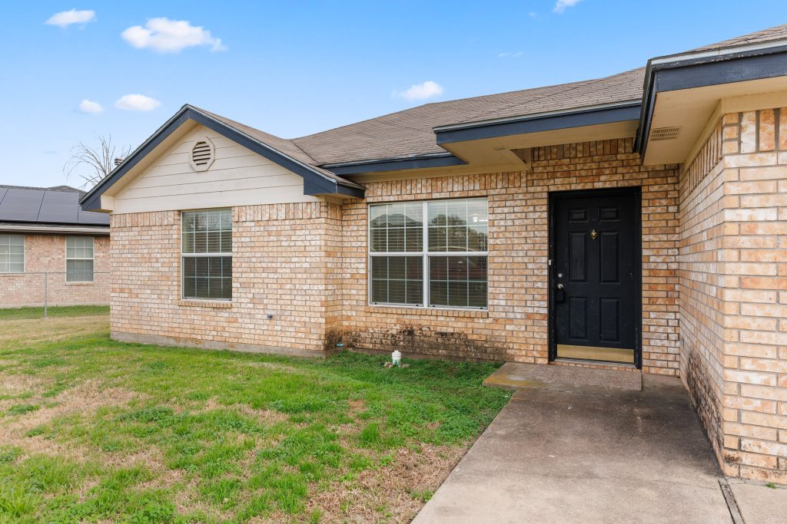

Position and lease
Local rent guidance, property presentation, advertising, inquiries, showings, applicant screening, lease preparation, and move-in coordination.
Single-family property management
J R Grace Realty combines an owner and investor perspective with disciplined systems, purposeful technology, and responsive people for single-family rentals throughout greater Waco.
Full-service Waco rental management
A single rental home can create dozens of decisions each month. Our property-management-first team organizes them into a consistent process that cares for the property, supports residents, and keeps owners informed without making them manage the manager.
Local rent guidance, property presentation, advertising, inquiries, showings, applicant screening, lease preparation, and move-in coordination.
Rent collection, resident questions, lease administration, owner statements, documentation, and routine communication.
Maintenance intake, repair coordination, inspections, condition documentation, renewals, and move-out oversight.
Why owners hire a manager
Strong management requires fast follow-up, consistent documentation, fair and repeatable processes, and practical decisions about pricing and repairs. We understand the mortgage, vacancy, reserve, maintenance, and long-term investment questions behind the property—not only the monthly rent.
JR Grace Realty’s public reviews reflect what matters most in property management: responsiveness, professionalism, local knowledge, and follow-through.
A practical management path
We start with why you own the property, what you want it to accomplish, what concerns you, and whether renting is the right path. Then we review condition, timing, and likely market position.
We define the make-ready plan, recommend pricing, and prepare the listing for prospective residents.
Inquiries, showings, screening, lease documents, and move-in are handled through a documented process.
Our team coordinates resident needs, rent, maintenance, reporting, renewals, and property transitions.
A clearer starting point
Get a local, property-specific rental analysis with a recommended target and a practical range for different leasing strategies.

Illustrative example. Your recommendation depends on location, condition, timing, and comparable rentals.
Talk with JR Grace Realty
Share a few details and our Central Texas team will follow up with a property-specific rental analysis.
Please wait while we securely send your information.